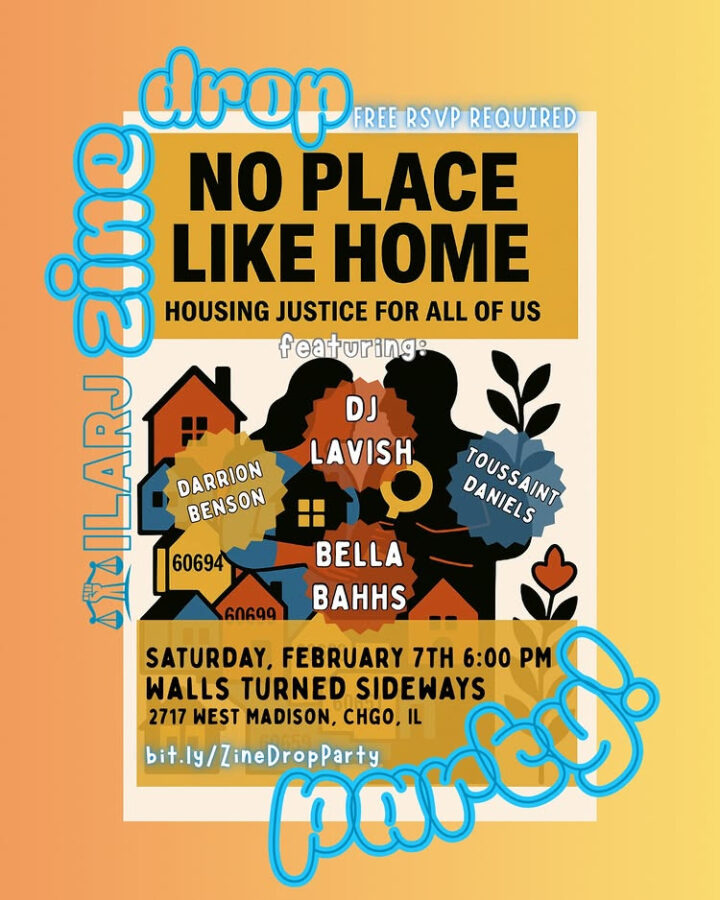

ILARJ No Place Like Home Zine Drop Party
Join us on 02/7 for the No Place Like Home Zine Drop Party!
We are joined by @wallsturnedsideways for a night of celebration, resistance, and radical joy as we unveil the No Place Like Home Zine — a community-rooted collection of housing policy recommendations that center dignity, stability, and justice.
DJ Lavish will be spinning all night @bellabahhs brings a powerful live performance ️ Spoken word by @moodystproduction and @toussaint__the_abolitionist